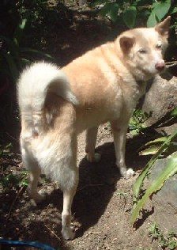

いろんなペットがあるけれど、なんといっても主流は犬と猫。この飼い主には犬派と猫派があるという。σ(-_-)はペットならなんでも好きだし、犬猫に関しても区別はない（子供の時は、ネコを飼っていた）。しかし家人は完全に犬派。本人は「そんなことはない」と全否定しているが目を見ればわかる。
「あのなぁ、○○さんとこの猫がなぁ」と問いかけただけで、「ネコっ！」と振り返った目が三角....「あのなぁ、○○さんとこの犬がなぁ」と問いかけると、「いぬ？」と振り返った目尻がさがってる（笑）
しかし犬派と猫派といっても、単に環境とかなりゆきによるだけで、本質的な好き嫌いではないような気がする。たまたまなりゆき、あるいは環境で犬 or 猫に縁があった。それが贔屓のもととなり続いているだけ、という気がする。
たとえば家人の実家では、家人が子供の時から犬を飼っていた。成人するまでの青春時代、その犬と過ごした。それが自然な犬贔屓になっているだけだろう。いまさら意識的に猫を飼おうとは思っていないにしても、何かの拍子に猫を飼う状況になると、きっとそのまま猫を可愛がると思う。
回りから猫屋敷と呼ばれているほど猫をたくさん飼っている知人がいる。一番多いときには30数匹が家の中にごろごろしていた。遊びに行くと、どこの部屋も猫だらけ。
「なんでこんなに飼っているんだ」と聞くと「勝手に生まれるから」、「それにしても多いのでは」と云うと、「いや、３分の１（約10匹）は、よその猫」、「なんでそれがここにいるんだ？」と問えば、「うちの猫が勝手に連れてくる。エサはその辺においてあるから一緒に食べるようになって...」。「ふ〜ん、でもそれじゃあ、近所の飼い主は、ペットがいなくなって困ってるんじゃないか」と聞くと、「ときどき『うちの猫、いませんか』って尋ねてくる」だって。
これだけ聞くと、この知人は筋金入りの猫派に聞こえる。しかし中学高校のときは、筋金入りの犬派だった。じつは彼は高校時代の同級生。その頃は犬を飼っていた。家に遊びに行ったとき、犬の散歩につきあったことがある。するとその途中、猫の姿がみえた。すると彼がいきなり小石を拾って投げつけた。当たりはしなかったが、猫はビックリして逃げた。
「何をするんだ」と云うと、「あの猫は、ときどきうちの犬のエサを食べてしまう」という。「それにしても、石を投げつけなくても....」というと、「そもそも俺は猫がキライなんだ」。そのときはそれで話が終わったが、そんな彼の家が いまでは猫屋敷（９匹くらい、いる）。
きっかけを聞いたら、「ケガをしている子猫を見つけたので、つれ帰って治療した。そのまま飼い猫になったが、それがメスだった。そして子猫が産まれて、あとはなりゆき」と云った。
中には本能的に犬や猫を受け付けない人もいるようなので、全部が全部とは云わない。けれど彼のような実例もある。そこで犬派と猫派といっても、かなりの人は環境とかなりゆきによるもので、本質的な好き嫌いではないような気がする。そこで、たぶん家人も環境とかなりゆきによる犬派だとは思うが、ムリに意識を変えてやろうとも思わない。そこで我が家では結婚してから犬しか飼っていない。あ、インコや金魚も飼っていたな（インコには逃げられ、金魚は死んじゃった....）。写真はいま飼っているのは犬。もとはノラ。

平成２年、家人が急に「ねぇ、あなた。犬、飼わない？」と言い出した。「気が進まない」と返事すると、「見るだけ見たら？」
実はその前にも犬を飼っていた。あるところから貰ってきた犬で、きちんとした柴犬。子供が「ジョン」だとか「太郎」だとかいうのを、「やかましい、名前はリーチに決まっている」と押し切ってリーチと名付けた。可愛がっていたが、数年経った頃、公園で盗まれた（立木に縛り付けてちょっと離れたスキに....）。近くの公園なので、自然にヒモがはずれたものなら帰って来るはずなのに、帰ってこなかった。それでがっかりして、もう犬は飼う気がなかった。そんなときに、家人が声を掛けてきたわけ。
なんども「気がない」と返事したが、「見るだけ、見るだけ」とうるさいので、「じゃあ、見るだけ」と腰を上げた。でかけると、近所の家の庭先を真っ白な子犬がうろちょろしている。その家の人（家人の知人）に聞くと、昨日、迷い込んできて庭先をうろちょろしている」という。（ふ〜ん、可愛いじゃないか）と思って抱き上げたら、顔をペロペロ。そのまんま我が家のペットに....ところが子犬の時は真っ白だったが、年が経つに従ってだんだん茶色。う〜む、すっかりダマされた。（笑）
この犬の名前は「ペー」、別に麻雀を意識したわけではないが、気がついたらそうなっていた。ついでながら別の知人の家の犬の名は「トン」で、さらに別の知人の家の猫は「ナン」という。万が一、うちで猫を飼うことになったら、名前は「シャー」に決まり。（笑）
|